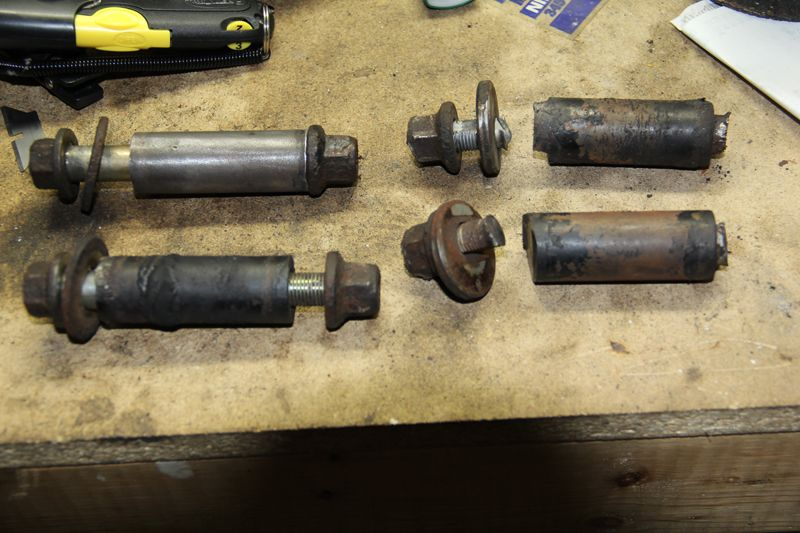

-
I just disassembled 2 rear subframes and couldn't save more than 1 sleeve, it's ridiculous but short of having some made up or buying new rubber bushings…
anyone know if energy suspension or other prothane parts (say s130?) for example have them? -
Seems like a lot of us have been having this issue recently. On my 84, I had to cut the bolts off of both the inner sleeves, the bolts were completely seized in, rendering them useless to reuse with the new Prothane bushings. One of the only options as you said, is to buy new bushings, and burn the rubber off an use them. I'm sure there has got to be another car that uses the same diameter, and length inner sleeves. But, what a broad search that would be. I'm actually surprised ES, or Prothane doesn't include them.
The odd thing, is some cars have different diameter sleeves for the inner/outter bushings on rear control arms.

-
I managed to save two of them
So i got new ones made out of 316 stainless.
Much better than installing original carbon steel ones wich eventually will sieze again.Toyota Corolla Ae86 Levin
Nissan Laurel C32 [X]
Nissan 300ZX Z31
Toyota Starlet Kp62 [X]
Originally posted by marcopolo -
Awesome! Here's how mine look, lol.
 -
Mine didnt look any better. Lol
yes, i am a picture idiot. I take pictures of about everything! edit : just checked my albums. I got 2382 pics of my Z build. And thats just the suspension, headers, new oilcooler and new exhaust. ^_^
Seeing that you have two "whole" ones there. Clean em up and get them to a machineshop and tell them you want an exact replica of them.
The adjustment arm one should be 0.5mm larger radius. So be aware of that. I had to have mine remilled. :banghead since i didnt
think of that.
edit : oh, both adjustable ones are out. Apply enough heat to them to relieve the siezure and try pounding out the bolt. It should go back to its original shape afterwards if you let
it cool off naturally. Then you should have the inner diameter. Lenght is the same as the other ones.Toyota Corolla Ae86 Levin
Nissan Laurel C32 [X]
Nissan 300ZX Z31
Toyota Starlet Kp62 [X]
Originally posted by marcopolo -
Hah, don't feel bad. I take photos of pretty much everything, aswell. -
I still have the old ones. (never throw anything you might get use for ONE day in the rest of your life)
I could take some measurements with images and toss up for you guys? geting new ones milled in 316 or another material is
much cheaper than buying new bushings. Even better considering you dont have to spend time destroying them in the process.Toyota Corolla Ae86 Levin
Nissan Laurel C32 [X]
Nissan 300ZX Z31
Toyota Starlet Kp62 [X]
Originally posted by marcopolo -
Hey, you might as well throw it out there. Gives some options and more measurements to add to my book of stuff :d -
I've got solid models of those as well.
Might be something easy that ASCO could offer for replacement along with oe grade bolts? Cost shouldn't be more than $5/pc at most in a mid volume run.

1988 300zxt. gt35, stance, etc. Wheels: Varrstoen ES2 18x9.5 et-13 225/40. 18x10.5 et0 245/40
1990 jetta vr6'd -
Saved 2 of mine as well. The 2 to adjustment ones we spun up in stainless steel. Considered making a few extras, but we were running out of time. -
Damn, everyone has the same issue lol. I had that issue and had to chop it off. but I reused the other side by burning it and then scrubbing it on a scour pad. Put anti seiz on the bolts this time…it will never rust up again!My Build Thread -
did you measure them? I can have some made too, if you have the specs I'll ask my cousin to do it this weekGnugfur wrote: Seeing that you have two "whole" ones there. Clean em up and get them to a machineshop and tell them you want an exact replica of them.
The adjustment arm one should be 0.5mm larger radius. So be aware of that. I had to have mine remilled. :banghead since i didnt -
[quote]G-E wrote:As I said above I'm pretty sure i have full 3d models at home of them, will let you know tonightOriginally posted by Gnugfur
1988 300zxt. gt35, stance, etc. Wheels: Varrstoen ES2 18x9.5 et-13 225/40. 18x10.5 et0 245/40
1990 jetta vr6'd -
Glad I live in the South. No rust to worry about. I was able to save all 4 of mine and even the bolts cleaned up well with a good zinc coating left.
Maybe someone should offer the stainless version for sale. Set of 4 for $30 or so?
1986 300ZX Turbo…sold
1990 Skyline GT-R…new money pit
2014 Juke Nismo RS 6-speed…daily -
I live in california with no salt, but mine got rusted shut. Never seen that before. But fortunatly I dont have the rust like OTHER people do lol.NissanEgg wrote: Glad I live in the South. No rust to worry about. I was able to save all 4 of mine and even the bolts cleaned up well with a good zinc coating left.
Maybe someone should offer the stainless version for sale. Set of 4 for $30 or so?My Build Thread

Copyright © 2006–. All rights reserved. Privacy Policy